Section 12.2 Structures That Function as Adverbials
One of the most important insights of the form-vs-function framework is that a single grammatical role can be filled by many different structural forms. The adverbial function is a prime example. Consider three sentences: She arrived quickly. She arrived at noon. She arrived when the bell rang. In all three, the final element answers the same question—how or when she arrived—and all three occupy the adverbial slot in the clause. But their forms are completely different: an adverb phrase, a prepositional phrase, and a dependent clause. The seven structures listed below are all legitimate adverbials in English.
1. Adverb Phrases.
The prototypical adverbial is an adverb phrase—a single adverb or an adverb with a degree modifier. Adverb phrases typically express manner (quietly), time (soon), frequency (often), or degree (very). Because adverbs are the form class most closely associated with the adverbial function, students sometimes assume that only adverbs can be adverbials. The rest of this section shows why that assumption is far too narrow. Adverb phrases can also be modified by degree words to create multi-word phrases: very carefully, quite often, remarkably quickly.
-
She spoke quietly. (manner)
-
He arrived very late. (time)
-
They finished remarkably quickly. (manner)
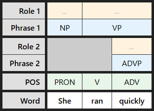
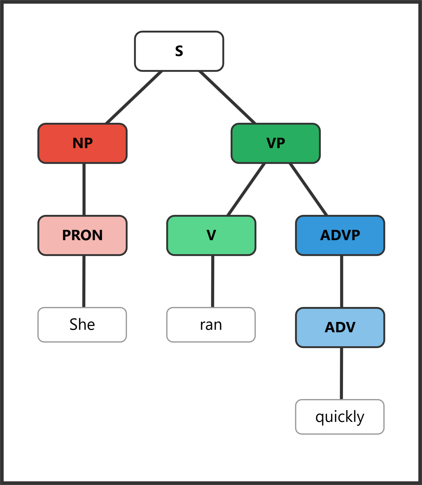
[S [NP [PRON She]] [VP [V ran] [ADVP [ADV quickly]]]]
2. Prepositional Phrases.
Prepositional phrases are the most versatile adverbial form, capable of filling nearly every semantic role—place, time, manner, reason, purpose, and more. A preposition links a noun phrase to the rest of the clause, and the resulting PP slots into the verb phrase as an adverbial modifier. Because English has dozens of prepositions, each selecting for different meanings, PPs are by far the most common adverbial structure in both speech and writing. When you see a PP inside a verb phrase that is not a complement required by the verb, it is almost certainly functioning as an adverbial.
-
She works in the city. (place)
-
He arrived at noon. (time)
-
They spoke with enthusiasm. (manner)
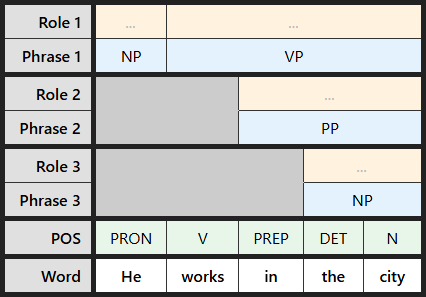
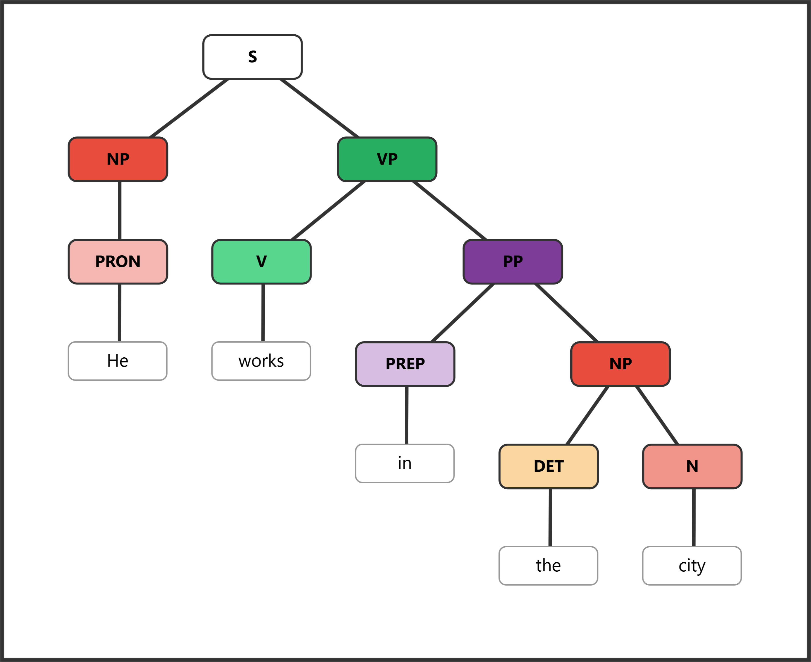
[S [NP [PRON He]] [VP [V works] [PP [PREP in] [NP [DET the] [N city]]]]]
3. Noun Phrases (Temporal/Spatial).
Certain noun phrases function adverbially without a preposition, especially those indicating time, direction, or extent. Expressions like yesterday, last week, and every morning occupy the adverbial slot even though their form is nominal. This can be surprising: a noun phrase is filling a modifier role rather than a subject or object role. The pattern is limited mainly to temporal and directional expressions—you cannot say She spoke the library to mean "at the library"—but within that domain it is extremely common in everyday English.
-
She arrived yesterday. (time)
-
They met last week. (time)
-
The bird flew north. (direction)
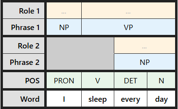
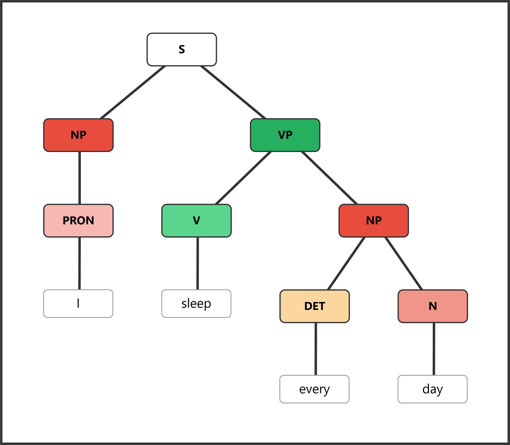
[S [NP [PRON I]] [VP [V sleep] [NP [DET every] [N day]]]]
4. Infinitive Phrases.
Infinitive phrases can function as adverbials, and when they do, they almost always express purpose—answering the question why? or for what reason? The marker to followed by the base form of a verb creates a non-finite clause that modifies the main verb. Adverbial infinitives can appear in final position (She left early to catch the train) or in initial position for emphasis (To understand the problem, you must read the data). Because infinitive phrases can also function as subjects or complements, identifying the adverbial use requires checking whether the infinitive answers a purpose question about the verb rather than filling a noun slot.
-
She came to help. (purpose)
-
He studied hard to pass the exam. (purpose)
-
To succeed, you must practice. (purpose)
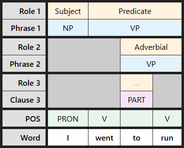
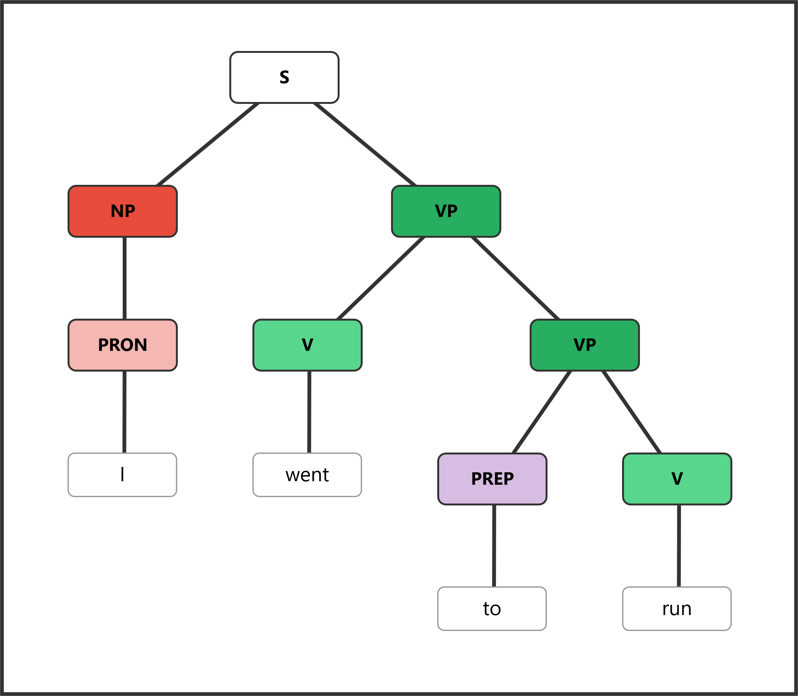
[S [NP [PRON I]] [VP [V went] [VP [V to run]]]]
5. Participial Phrases.
Participial phrases—built on present participles (-ing) or past participles (-ed/-en)—can function adverbially, typically expressing reason, time, or attendant circumstances. Unlike adverb phrases and PPs, participial adverbials are non-finite clauses: they contain a verb form but lack a tense marker and a grammatical subject. The understood subject is normally the subject of the main clause, which is why a mismatch produces a dangling modifier (covered in Clarity and Readability). Participial adverbials appear most often in initial position, set off by a comma, and give writing a more formal or literary texture.
-
Knowing the answer, she raised her hand. (reason)
-
He left, having finished his work. (time/reason)
-
Exhausted, she fell asleep. (reason)
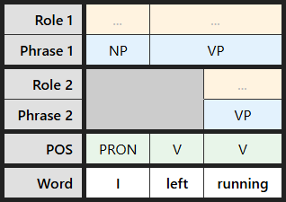
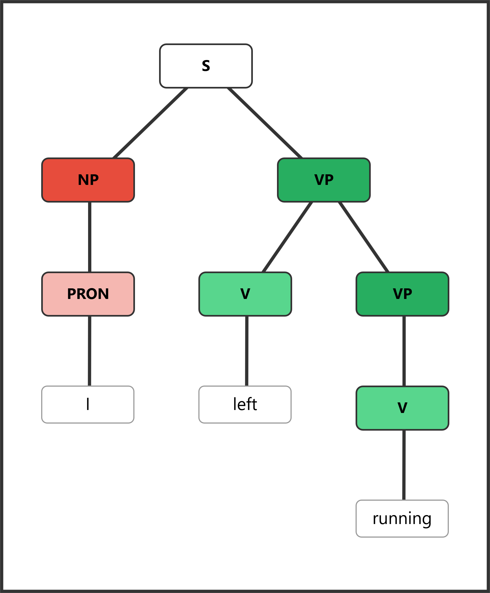
[S [NP [PRON I]] [VP [V left] [VP [V running]]]]
6. Conjunctive Adverbs.
Conjunctive adverbs (however, therefore, nevertheless, moreover) function adverbially while also signaling a logical relationship between ideas. Despite their name, conjunctive adverbs are adverbs, not conjunctions—they modify the clause they appear in rather than grammatically joining two clauses the way a coordinating or subordinating conjunction does. When two independent clauses are linked by a conjunctive adverb, the clauses must be separated by a semicolon or a period; a comma alone produces a comma splice. Conjunctive adverbs are also mobile within their clause—however can appear at the beginning, middle, or end—which is a key test distinguishing them from true conjunctions. For a full treatment of how conjunctive adverbs interact with sentence structure and punctuation, see Conjunctions and Clauses.
-
She was tired. However, she continued.
-
The evidence is strong. Therefore, we should proceed.
7. Adverbial Clauses.
Entire dependent clauses introduced by subordinating conjunctions function as adverbials. An adverbial clause contains a subject, a verb, and often its own complements—it is a full clause, but the subordinating conjunction (when, because, although, if, while, after) marks it as dependent and signals its semantic role. Adverbial clauses can express time, reason, condition, concession, purpose, and result, making them the most semantically varied adverbial structure. They appear freely in initial position (followed by a comma) or final position (typically without a comma). Adverbial clauses are covered in detail in Conjunctions and Clauses alongside other clause types. Here is a brief overview:
-
When the bell rang, students left. (time)
-
She succeeded because she worked hard. (reason)
-
Although it rained, we continued. (concession)
-
If you need help, call me. (condition)
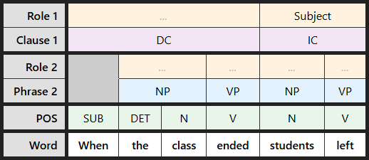
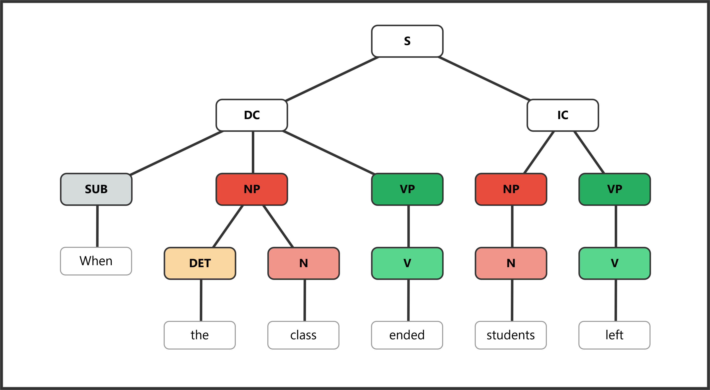
[S [DC [SUB When] [NP [DET the] [N class]] [VP [V ended]]] [IC [NP [N students]] [VP [V left]]]]